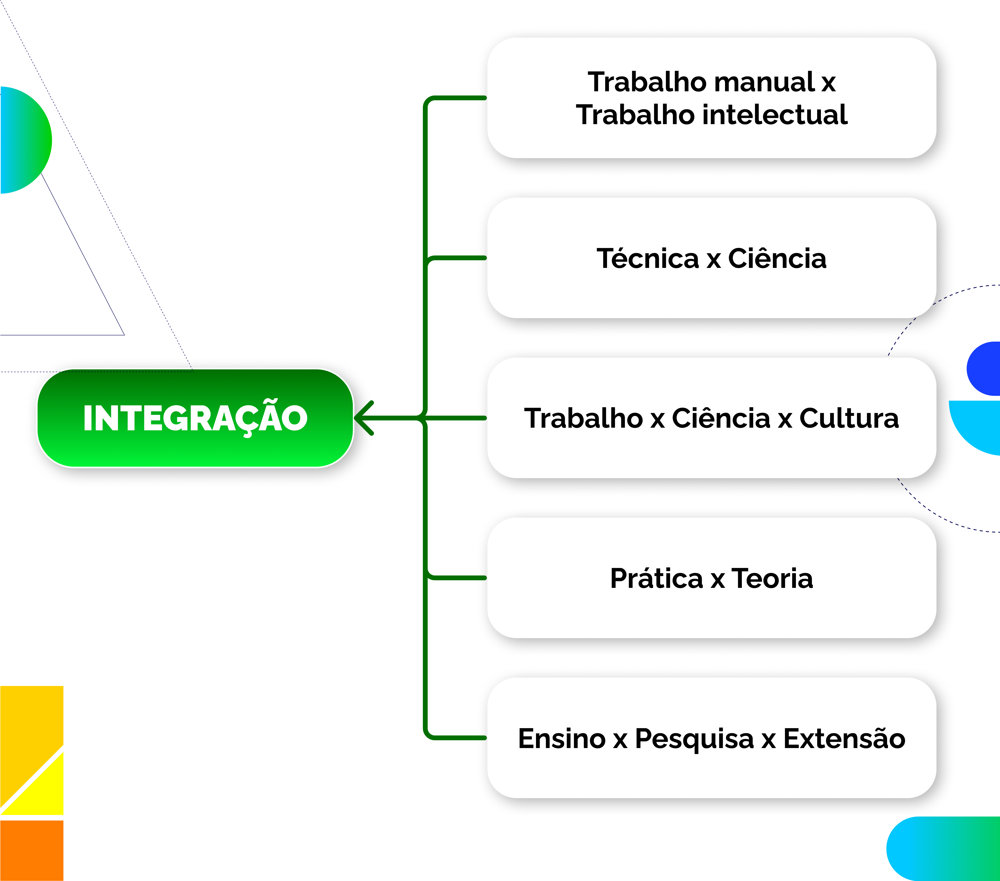
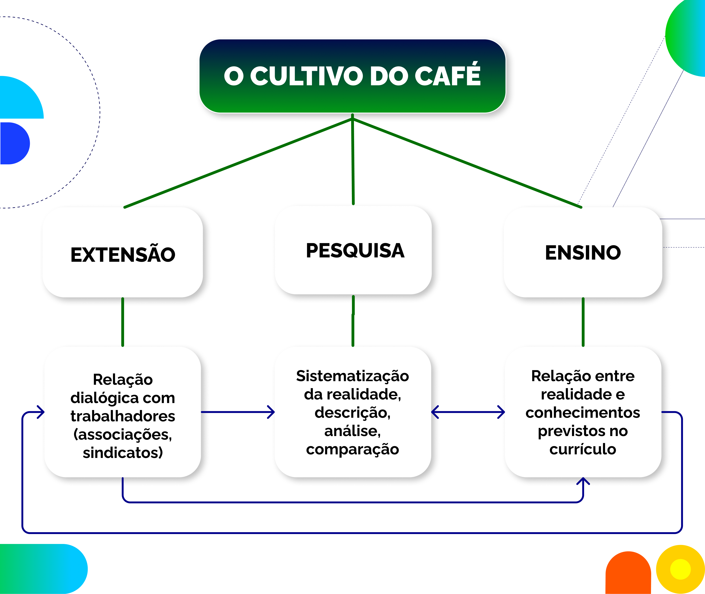

Indissociabilidade entre ensino, pesquisa e extensão
Outro princípio educativo também incluído na Constituição Federal e na LDBEN é o da indissociabilidade entre ensino, pesquisa e extensão. Nesse caso, ele está restrito ao trabalho das universidades, o que nos leva a questionar se esse tema é, de fato, uma exclusividade do Ensino Superior. Não seria possível pensar nas práticas da pesquisa e do ensino e em sua relação com a comunidade a partir de outros níveis e modalidades de ensino?
Comecemos dando continuidade à discussão da seção anterior. Na perspectiva da participação popular, a comunidade externa à escola também usufrui dela como um ambiente em que suas demandas podem ser discutidas e resolvidas. Nesse sentido, por que não construir o processo a partir dos conhecimentos produzidos e ensinados na formação profissional dos estudantes?
Há um conjunto de que orientam a prática da extensão nos espaços educacionais formais brasileiros. Visitemos, por exemplo, a forma como o Conselho Nacional das Instituições da Rede Federal de Educação Profissional, Científica e Tecnológica (Conif) compreende a questão: trata-se, para essa importante entidade da EPT brasileira, de um processo educativo cultural, social, científico e tecnológico, que promove a interação entre o mundo do trabalho, as instituições e os segmentos sociais (Conif, 2022). Percebe-se que se trata de uma concepção que vai além da ideia unilateral de “estender o braço” à comunidade e não a inscreve apenas no espaço universitário. Na visão do Conif (2022), a extensão assume uma perspectiva mais ampla, próxima do que Paulo Freire (2017) entendia como 'comunicação', ou seja, ação cultural transformadora que mobiliza e articula saberes.
Ao apontar para outra realidade, a missão escolar politécnica (de formar para o trabalho) supera a prática laboral como assalariamento e exploração. Nessa perspectiva, o trabalho se situa na intersecção entre a teoria e a prática e na satisfação de necessidades mais gerais da sociedade. É novamente Pistrak (2018 [1925]) quem nos ajuda a pensar em termos de um trabalho socialmente útil, que interage permanentemente com a comunidade – ainda que vise à preparação para uma profissão.
A Rede Federal de Educação Profissional, Científica e Tecnológica tem produzido muitas experiências interessantes em extensão na EPT integral e integrada segundo essa perspectiva. Vale visitar, por exemplo, um produto educacional construído no âmbito da própria rede, em Programa de Pós-Graduação, no qual Couto e Cavalari Júnior (2020) apresentam um guia de ação para a indissociabilidade na EPT e indicam diretrizes interessantes para a extensão. Os autores assumem essa prática justamente como o ponto de partida para a indissociabilidade, e como uma lente que ilumina loci específicos do mundo do trabalho. É o que podemos denominar como princípio político central da EPT. 
Título: O guia indissociável entre ensino, pesquisa e extensão
Fonte: Couto e Cavalari Júnior (2020).
No que se refere à pesquisa, já discutimos que a perspectiva politécnica se pauta em uma visão científica dos conhecimentos escolares. Como estamos tratando de um currículo guiado pela ciência, a relação com a comunidade não se constrói a partir do voluntarismo nem apenas de opiniões pessoais. Ainda que se edifique sobre o diálogo de saberes, os próprios conhecimentos tradicionais são articulados à ciência e aos métodos próprios a cada área. Busca-se, seja no estudo descritivo de realidades específicas, seja na pesquisa que conduzirá a novos conhecimentos e tecnologias, fornecer estatuto científico aos temas e aos projetos desenvolvidos.
O tipo de conhecimento novo que poderá ser produzido dependerá do nível de ensino em que o processo se desenvolve (qualificação profissional, ensino fundamental, ensino médio ou ensino superior) e, além disso, das condições concretas de que a escola dispõe, como laboratórios, profissionais especializados, formação e experiência dos educadores, capacidade de diálogo e planejamento da equipe etc. Seja como for, a relação estabelecida com as demandas sociais potencializa a produção de novos saberes e pode ser utilizada para enriquecer processos didáticos de transmissão de conhecimentos. É possível falar, assim, na pesquisa como princípio pedagógico central da EPT.
A rigor, o ato de ensinar sistematiza os aspectos que discutimos até aqui e os submete ao que a humanidade já produziu, historicamente, em termos de conhecimentos científicos. Essa organização é transmitida culturalmente de geração em geração e adquire um estatuto próprio (disciplinar) quando permeia a relação entre professor e aluno. Ensinar futuros profissionais – na EPT de natureza politécnica – significa construir compromissos com a realidade, pensando em projetos de sociedade e de país de maneira autônoma. Nesse sentido, se retomarmos o sentido da ideia de integração, é possível designá-lo a partir de diferentes perspectivas:

Título: Perspectivas de Integração
Fonte: Prosa (2025d).
Vejamos um exemplo. Em uma dada região, a produção econômica preponderante é oriunda do cultivo do café. A estrutura geográfica é composta por propriedades pequenas, médias e grandes, incluindo o latifúndio do café, além de contar com os mais variados métodos de cultivo. Assumindo esta como a temática central de um projeto integrado, um dado curso técnico em escola localizada na região pode convocar sindicatos e associações de pequenos agricultores para que seja possível, de forma coletiva e com metodologias adequadas, levantar demandas produtivas, sociais e políticas. É bastante provável que muitos estudantes sejam oriundos de famílias trabalhadoras da lavoura do café; inclusive, eles próprios podem ter tido experiências individuais de trabalho.
Nesse processo, necessidades surgirão, como aumentar a eficiência da produção, dos impactos do uso de agrotóxicos na saúde, das condições de trabalho no campo – Consolidação das Leis do Trabalho (CLT), informalidade, trabalho análogo à escravidão –, do transporte e das infraestruturas locais etc. Pesquisar essa realidade pode significar várias coisas: descrevê-la, compará-la com outras regiões do país, desenvolver novos conhecimentos e até testar métodos produtivos específicos.
Já o processo de ensino pode, a partir da pesquisa, dialogar com os conhecimentos previamente estabelecidos no currículo: geografia brasileira, em seus aspectos naturais e econômicos; história do Brasil; relações entre variáveis na matemática; reações químicas na produção de agrotóxicos; produção de textos que envolvam relatos de experiência; e aspectos específicos de disciplinas técnicas, com caráter profissional, mesmo que em áreas não diretamente ligadas à agricultura etc. Em suma, a depender das condições concretas da escola, é possível conceber inúmeros desenhos de projetos que articulem extensão, pesquisa e ensino, em graus diversos.

Título: Cultivo do café
Fonte: Prosa (2025e).
Observe que, no infográfico, o diálogo com a comunidade é o ponto de partida, assumindo o eixo da participação popular como prioritário. A pesquisa e o ensino se organizam a partir daí, havendo um vínculo bastante estreito entre essas duas últimas dimensões. Contudo, o objetivo final é retornar à realidade com novos conhecimentos, novas ideias e novos diálogos, que podem servir como pontos de partida para projetos futuros. É perfeitamente possível conceber arranjos diferentes em que, por exemplo, os conhecimentos a serem transmitidos, ou então a ideia de desenvolver uma nova tecnologia, servem como ponto de partida. Tudo isso pode variar conforme as condições de cada situação.